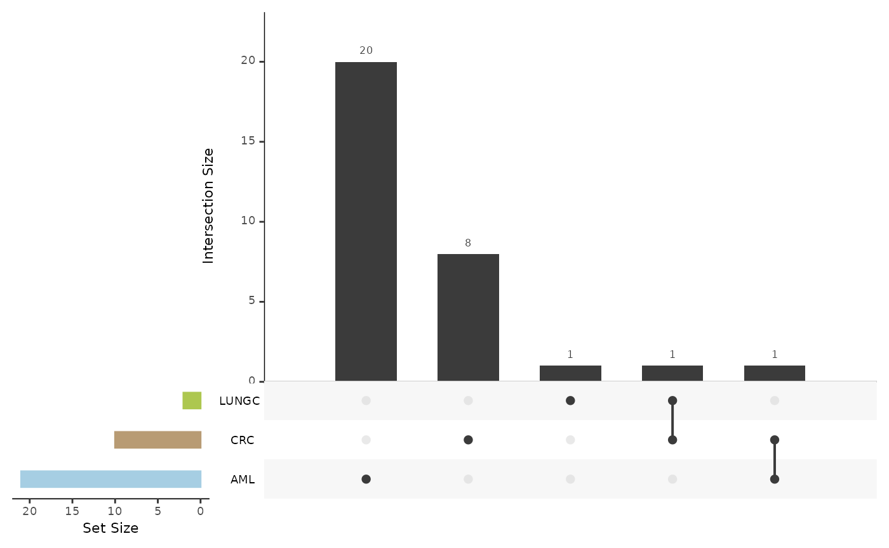
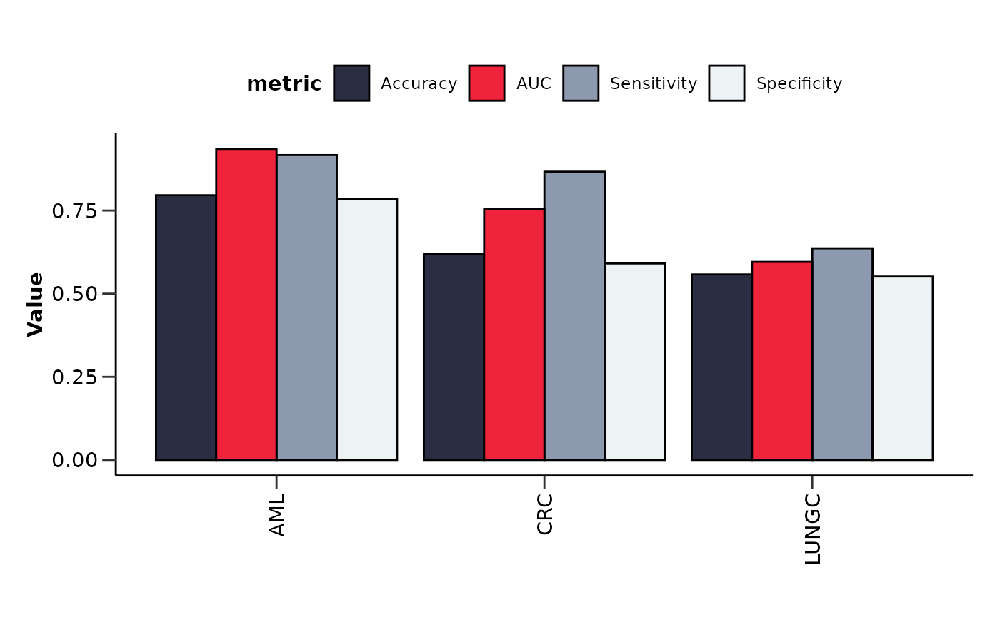
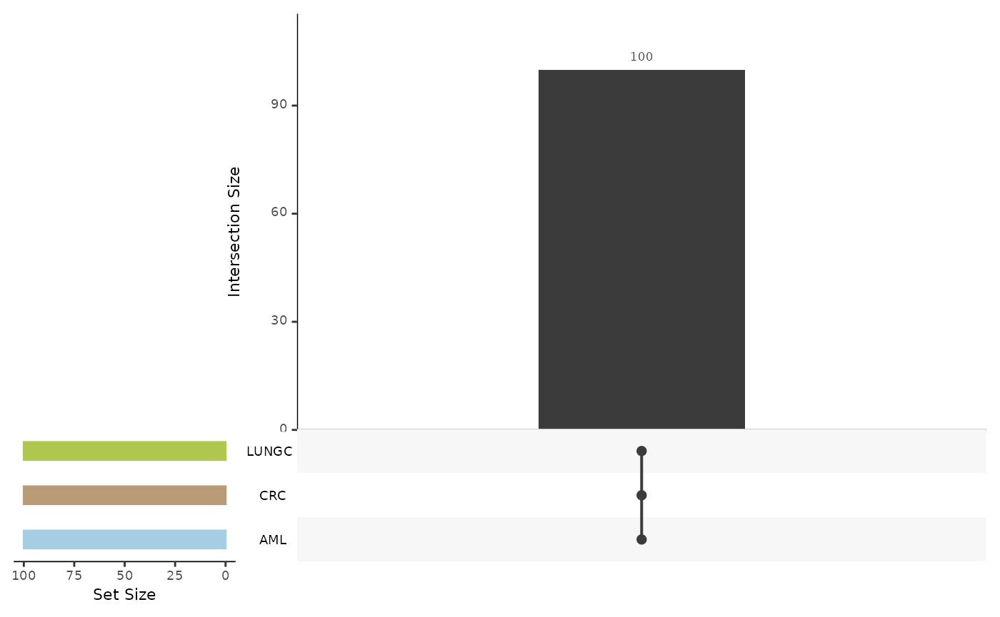
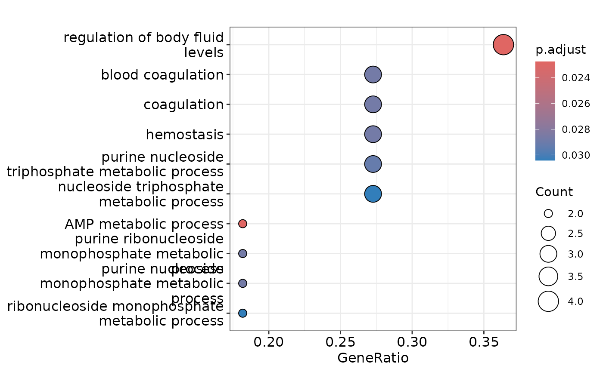

What is HDAnalyzeR?
HDAnalyzeR is an R package developed to streamline and enhance proteomics analysis, particularly for biomarker discovery from blood plasma samples. It is developed by the Human Disease Blood Atlas group. This vignette will guide you through the essential steps to use the package from data loading to biomarker identification. Let’s get started by loading the package!
How to get Help?
If you need help with the package, you can use the ?
operator to access the documentation for a specific function. For
example, to access the documentation for the
hd_initialize() function, you can run:
?hd_initializeAll package functions can be found in the HDAnalyzeR Function Reference page. For whole example workflows you can visit any of the package articles.
This document introduces you to HDAnalyzeR’s basic set of tools, and shows you how to analyze and identify biomarkers in a artificial dataset of cancer blood plasma samples.
Loading the Data
First, we load the package’s example_data and
example_metadata.
head(example_data)
#> DAid Sample OlinkID UniProt Assay Panel NPX
#> 1 DA00001 AML_syn_1 OID21311 Q9BTE6 AARSD1 Oncology 3.3903461
#> 2 DA00001 AML_syn_1 OID21280 P00519 ABL1 Oncology 2.7588517
#> 3 DA00001 AML_syn_1 OID21269 P09110 ACAA1 Oncology 1.7070090
#> 4 DA00001 AML_syn_1 OID20159 P16112 ACAN Cardiometabolic 0.0332709
#> 5 DA00001 AML_syn_1 OID20105 Q9BYF1 ACE2 Cardiometabolic 1.7553590
#> 6 DA00001 AML_syn_1 OID20124 Q15067 ACOX1 Cardiometabolic -0.9192835
#> Assay_Warning QC_Warning PlateID
#> 1 PASS PASS Run001
#> 2 PASS PASS Run001
#> 3 PASS PASS Run001
#> 4 PASS PASS Run001
#> 5 PASS PASS Run001
#> 6 PASS PASS Run001
head(example_metadata)
#> DAid Sample Disease Stage Grade Sex Age BMI Cohort
#> 1 DA00001 AML_syn_1 AML 2 <NA> F 42 22.7 UCAN
#> 2 DA00002 AML_syn_2 AML Unknown <NA> M 69 33.1 UCAN
#> 3 DA00003 AML_syn_3 AML 2 <NA> F 61 26.2 UCAN
#> 4 DA00004 AML_syn_4 AML Unknown <NA> M 54 28.1 UCAN
#> 5 DA00005 AML_syn_5 AML 2 <NA> F 57 21.4 UCAN
#> 6 DA00006 AML_syn_6 AML Unknown <NA> M 86 33.9 UCANWe will initialize the HDAnalyzeR object with the data and metadata.
The hd_initialize() function will create an object that
will be used throughout the analysis. We will specify the sample ID,
variable name, and value name in order to correctly load and widen the
data. In this case, the data is in long format, so we set
is_wide = FALSE.
hd_obj <- hd_initialize(dat = example_data,
metadata = example_metadata,
is_wide = FALSE,
sample_id = "DAid",
var_name = "Assay",
value_name = "NPX")
# See the data transformed into a wide format!
head(hd_obj$data)
#> # A tibble: 6 × 101
#> DAid AARSD1 ABL1 ACAA1 ACAN ACE2 ACOX1 ACP5 ACP6 ACTA2 ACTN4
#> <chr> <dbl> <dbl> <dbl> <dbl> <dbl> <dbl> <dbl> <dbl> <dbl> <dbl>
#> 1 DA00001 3.39 2.76 1.71 0.0333 1.76 -0.919 1.54 2.15 2.81 0.742
#> 2 DA00002 1.42 1.25 -0.816 -0.459 0.826 -0.902 0.647 1.30 0.798 -0.0659
#> 3 DA00003 NA NA NA 0.989 NA 0.330 1.37 NA NA NA
#> 4 DA00004 3.41 3.38 1.69 NA 1.52 NA 0.841 0.582 1.70 0.108
#> 5 DA00005 5.01 5.05 0.128 0.401 -0.933 -0.584 0.0265 1.16 2.73 0.350
#> 6 DA00006 6.83 1.18 -1.74 -0.156 1.53 -0.721 0.620 0.527 0.772 NA
#> # ℹ 90 more variables: ACY1 <dbl>, ADA <dbl>, ADA2 <dbl>, ADAM15 <dbl>,
#> # ADAM23 <dbl>, ADAM8 <dbl>, ADAMTS13 <dbl>, ADAMTS15 <dbl>, ADAMTS16 <dbl>,
#> # ADAMTS8 <dbl>, ADCYAP1R1 <dbl>, ADGRE2 <dbl>, ADGRE5 <dbl>, ADGRG1 <dbl>,
#> # ADGRG2 <dbl>, ADH4 <dbl>, ADM <dbl>, AGER <dbl>, AGR2 <dbl>, AGR3 <dbl>,
#> # AGRN <dbl>, AGRP <dbl>, AGXT <dbl>, AHCY <dbl>, AHSP <dbl>, AIF1 <dbl>,
#> # AIFM1 <dbl>, AK1 <dbl>, AKR1B1 <dbl>, AKR1C4 <dbl>, AKT1S1 <dbl>,
#> # AKT3 <dbl>, ALCAM <dbl>, ALDH1A1 <dbl>, ALDH3A1 <dbl>, ALPP <dbl>, ‚Ķüìì In real-world scenarios, you would load your own data and metadata files instead of using the example dataset.
⚠️ It is strongly recommended to use
hd_initialize()function to initialize an HDAnalyzeR object before starting any analysis. This initialization step ensures that your input data and metadata are correctly formatted and compatible with the package. While it is possible to use HDAnalyzeR functions on data outside of an HDAnalyzeR object, users must ensure that the data adheres to the required structure: the first column must contain sample IDs, followed by numeric columns in wide format. Additionally, the metadata must include the same set of sample IDs. Proper initialization or careful adherence to these requirements is crucial for accurate and efficient analysis.
Quality Control (QC)
hd_qc_summary() provides a comprehensive summary of the
input data and metadata.
Regarding the data, it will check the column types, calculate the percentage of NAs in each column and row and plot their distributions, calculate variable-variable (in this case protein-protein) correlations, and create a heatmap of these correlations. Users can also specify the threshold for reporting variable-variable correlations.
Regarding the metadata, it will check the column types and calculate the percentage of NAs in each column and row exactly as before. It will also create summary visualizations for the metadata variables like “Sex” and “Age”.
Let’s run the QC summary and take a look at some results!
qc_data <- hd_qc_summary(hd_obj,
variable = "Disease",
palette = list(Disease = "cancers12", Sex = "sex"),
cor_threshold = 0.7,
verbose = FALSE)
qc_data$data_summary$na_col_hist
#> `stat_bin()` using `bins = 30`. Pick better value with `binwidth`.
qc_data$data_summary$cor_heatmap
qc_data$metadata_summary$Sex
qc_data$metadata_summary$Age
#> Picking joint bandwidth of 6.06
Imputation and Dimensionality Reduction
As we saw from the QC results, the data contains NAs and other issues
that need to be addressed. We will impute missing values using K-nearest
neighbors (KNN) with 5 neighbors via hd_impute_knn().
hd_obj <- hd_impute_knn(hd_obj, k = 5, verbose = FALSE)
head(hd_obj$data)
#> # A tibble: 6 × 101
#> DAid AARSD1 ABL1 ACAA1 ACAN ACE2 ACOX1 ACP5 ACP6 ACTA2 ACTN4
#> <chr> <dbl> <dbl> <dbl> <dbl> <dbl> <dbl> <dbl> <dbl> <dbl> <dbl>
#> 1 DA00001 3.39 2.76 1.71 0.0333 1.76 -0.919 1.54 2.15 2.81 0.742
#> 2 DA00002 1.42 1.25 -0.816 -0.459 0.826 -0.902 0.647 1.30 0.798 -0.0659
#> 3 DA00003 3.70 2.85 2.27 0.989 0.184 0.330 1.37 0.876 1.33 0.570
#> 4 DA00004 3.41 3.38 1.69 0.415 1.52 1.23 0.841 0.582 1.70 0.108
#> 5 DA00005 5.01 5.05 0.128 0.401 -0.933 -0.584 0.0265 1.16 2.73 0.350
#> 6 DA00006 6.83 1.18 -1.74 -0.156 1.53 -0.721 0.620 0.527 0.772 0.446
#> # ℹ 90 more variables: ACY1 <dbl>, ADA <dbl>, ADA2 <dbl>, ADAM15 <dbl>,
#> # ADAM23 <dbl>, ADAM8 <dbl>, ADAMTS13 <dbl>, ADAMTS15 <dbl>, ADAMTS16 <dbl>,
#> # ADAMTS8 <dbl>, ADCYAP1R1 <dbl>, ADGRE2 <dbl>, ADGRE5 <dbl>, ADGRG1 <dbl>,
#> # ADGRG2 <dbl>, ADH4 <dbl>, ADM <dbl>, AGER <dbl>, AGR2 <dbl>, AGR3 <dbl>,
#> # AGRN <dbl>, AGRP <dbl>, AGXT <dbl>, AHCY <dbl>, AHSP <dbl>, AIF1 <dbl>,
#> # AIFM1 <dbl>, AK1 <dbl>, AKR1B1 <dbl>, AKR1C4 <dbl>, AKT1S1 <dbl>,
#> # AKT3 <dbl>, ALCAM <dbl>, ALDH1A1 <dbl>, ALDH3A1 <dbl>, ALPP <dbl>, …After imputation, we will run Principal Component Analysis (PCA) via
hd_auto_pca() and Uniform Manifold Approximation and
Projection (UMAP) via hd_auto_umap() to check for outliers,
batch effects, and other potential issues. These are wrapper functions
that will run the necessary steps to perform PCA and UMAP, including
scaling the data and coloring the plots by metadata variables.
pca_res <- hd_auto_pca(hd_obj,
components = 10,
plot_color = "Disease",
plot_palette = "cancers12")
head(pca_res$pca_res)
#> # A tibble: 6 × 11
#> DAid PC1 PC2 PC3 PC4 PC5 PC6 PC7 PC8 PC9 PC10
#> <chr> <dbl> <dbl> <dbl> <dbl> <dbl> <dbl> <dbl> <dbl> <dbl> <dbl>
#> 1 DA00… -3.69 -4.32 -2.30 -3.15 -2.53 -2.78 -2.77 0.603 -3.20 -0.532
#> 2 DA00… 4.17 -2.70 2.10 -0.472 -4.47 -1.96 -1.04 1.51 -0.229 -0.0614
#> 3 DA00… -3.31 4.74 1.41 0.920 -0.588 0.316 -0.103 -0.441 1.36 0.201
#> 4 DA00… -4.78 0.447 1.44 0.134 -1.15 -0.284 0.279 3.34 0.0452 -0.866
#> 5 DA00… -5.04 -3.69 0.820 -5.73 -0.697 -3.87 -1.01 1.96 -0.970 -1.12
#> 6 DA00… 0.429 0.0714 -1.86 -7.80 0.809 -2.89 -0.733 0.381 -0.617 1.32
pca_res$pca_plot
pca_res$pca_loadings_plot
pca_res$pca_variance_plot
Let’s color UMAP by Sex instead of Disease to see if there are any sex related differences.
umap_res <- hd_auto_umap(hd_obj,
plot_color = "Sex",
plot_palette = "sex")
head(umap_res$umap_res)
#> # A tibble: 6 × 3
#> DAid UMAP1 UMAP2
#> <chr> <dbl> <dbl>
#> 1 DA00001 2.25 -0.712
#> 2 DA00002 -2.23 -1.45
#> 3 DA00003 1.90 1.65
#> 4 DA00004 2.30 1.24
#> 5 DA00005 2.55 -0.620
#> 6 DA00006 -1.32 1.29
umap_res$umap_plot
Biomarker Identification
Differential Expression Analysis
We will run a differential expression analysis to identify potential
biomarkers. We will use hd_de_limma() so that we will be
able to correct also for Sex and Age. This method will help us pinpoint
proteins that are significantly different between conditions. We will
run the analysis 3 times for different case classes against all other
classes each time. We will also run hd_plot_volcano() to
visualize the results. We will present only the results for Acute
Myeloid Leukemia (AML).
de_res_aml <- hd_de_limma(hd_obj,
variable = "Disease",
case = "AML",
correct = c("Sex", "Age")) |>
hd_plot_volcano(logfc_lim = 1)
head(de_res_aml$de_res)
#> # A tibble: 6 × 10
#> Feature logFC CI.L CI.R AveExpr t P.Value adj.P.Val B Disease
#> <chr> <dbl> <dbl> <dbl> <dbl> <dbl> <dbl> <dbl> <dbl> <chr>
#> 1 AZU1 1.54 1.23 1.84 0.226 9.97 9.51e-22 9.51e-20 38.5 AML
#> 2 ADA 1.40 1.12 1.68 0.924 9.75 6.37e-21 3.19e-19 36.6 AML
#> 3 APBB1IP 1.08 0.799 1.35 -0.253 7.62 1.04e-13 3.45e-12 20.3 AML
#> 4 APEX1 1.45 1.07 1.82 0.515 7.56 1.50e-13 3.74e-12 19.9 AML
#> 5 ANGPT1 -1.63 -2.09 -1.16 1.72 -6.87 1.65e-11 3.29e-10 15.3 AML
#> 6 ARTN 0.826 0.572 1.08 0.423 6.38 3.60e-10 6.00e- 9 12.3 AML
de_res_aml$volcano_plot
de_res_crc <- hd_de_limma(hd_obj,
variable = "Disease",
case = "CRC",
correct = c("Sex", "Age"))
de_res_lungc <- hd_de_limma(hd_obj,
variable = "Disease",
case = "LUNGC",
correct = c("Sex", "Age"))We can also summarize the results via
hd_plot_de_summary(). In order to use this function we need
to store all the results in a list.
de_res <- list("AML" = de_res_aml,
"CRC" = de_res_crc,
"LUNGC" = de_res_lungc)
de_summary <- hd_plot_de_summary(de_res, class_palette = "cancers12")
de_summary$de_barplot
de_summary$upset_plot_up
de_summary$upset_plot_down
Machine Learning Classification Model
In addition to differential expression analysis, we will use a regularized machine learning classification model (LASSO) to identify significant features. This model will help us understand which protein features are most predictive of the conditions being studied.
We will start by creating the data split with
hd_split_data() so we don’t have any data leakage between
train and test data and then we will run the model with
hd_model_rreg(). Once again, we will run the analysis 3
times but we will present only the results for AML.
hd_split <- hd_split_data(hd_obj, variable = "Disease")
lasso_res_aml <- hd_model_rreg(hd_split,
variable = "Disease",
case = "AML",
mixture = 1,
grid_size = 5,
palette = "cancers12",
verbose = FALSE)
lasso_res_aml$metrics
#> $accuracy
#> [1] 0.7959184
#>
#> $sensitivity
#> [1] 0.9166667
#>
#> $specificity
#> [1] 0.7851852
#>
#> $auc
#> [1] 0.9351852
#>
#> $confusion_matrix
#> Truth
#> Prediction 0 1
#> 0 106 1
#> 1 29 11
lasso_res_aml$roc_curve
lasso_res_aml$probability_plot
lasso_res_aml$feat_imp_plot
lasso_res_crc <- hd_model_rreg(hd_split,
variable = "Disease",
case = "CRC",
mixture = 1,
grid_size = 5,
palette = "cancers12",
verbose = FALSE)
lasso_res_lungc <- hd_model_rreg(hd_split,
variable = "Disease",
case = "LUNGC",
mixture = 1,
grid_size = 5,
palette = "cancers12",
verbose = FALSE)We can get a visual summary of the results via
hd_plot_model_summary(). In order to use this function we
need to store the results in a list as before.
lasso_res <- list("AML" = lasso_res_aml,
"CRC" = lasso_res_crc,
"LUNGC" = lasso_res_lungc)
features_summary <- hd_plot_model_summary(lasso_res, class_palette = "cancers12")
features_summary$metrics_barplot
features_summary$features_barplot
features_summary$upset_plot_features
One step further
The final step involves performing a pathway enrichment analysis to
get more biological information about the features. In this example, we
will run an Over-Representation Analysis for the up-regulated proteins
from differential expression, that are also identified as features by
the ML model. We will use the Gene Ontology (GO) database and show the
results only for AML. We will use hd_ora() and
hd_plot_ora() to perform the analysis and visualize its
results.
# Extract the proteins identified by both DE and Lasso
de_proteins <- de_res_aml$de_res |>
dplyr::filter(adj.P.Val < 0.05) |>
dplyr::pull(Feature)
lasso_proteins <- lasso_res_aml$features |>
dplyr::filter(Scaled_Importance > 0) |>
dplyr::pull(Feature)
intersect_proteins <- intersect(de_proteins, lasso_proteins)
# Perform ORA with GO database and visualize results
enrichment <- hd_ora(intersect_proteins,
database = "GO",
ontology = "BP",
pval_lim = 0.2) # We will use a higher p-value threshold for this example
enrichment_plots <- hd_plot_ora(enrichment)
enrichment_plots$dotplot
enrichment_plots$treeplot
enrichment_plots$cnetplotüìì Remember that these data are a dummy-dataset with artificial data and the results in this guide should not be interpreted as real results. The purpose of this vignette is to show you how to use the package and its functions.
sessionInfo()
#> R version 4.5.1 (2025-06-13)
#> Platform: x86_64-pc-linux-gnu
#> Running under: Ubuntu 24.04.2 LTS
#>
#> Matrix products: default
#> BLAS: /usr/lib/x86_64-linux-gnu/openblas-pthread/libblas.so.3
#> LAPACK: /usr/lib/x86_64-linux-gnu/openblas-pthread/libopenblasp-r0.3.26.so; LAPACK version 3.12.0
#>
#> locale:
#> [1] LC_CTYPE=C.UTF-8 LC_NUMERIC=C LC_TIME=C.UTF-8
#> [4] LC_COLLATE=C.UTF-8 LC_MONETARY=C.UTF-8 LC_MESSAGES=C.UTF-8
#> [7] LC_PAPER=C.UTF-8 LC_NAME=C LC_ADDRESS=C
#> [10] LC_TELEPHONE=C LC_MEASUREMENT=C.UTF-8 LC_IDENTIFICATION=C
#>
#> time zone: UTC
#> tzcode source: system (glibc)
#>
#> attached base packages:
#> [1] stats graphics grDevices utils datasets methods base
#>
#> other attached packages:
#> [1] glmnet_4.1-9 Matrix_1.7-3 parsnip_1.3.2 recipes_1.3.1
#> [5] dplyr_1.1.4 HDAnalyzeR_0.99.0
#>
#> loaded via a namespace (and not attached):
#> [1] RcppAnnoy_0.0.22 splines_4.5.1 ggplotify_0.1.2
#> [4] tibble_3.3.0 R.oo_1.27.1 hardhat_1.4.1
#> [7] rpart_4.1.24 sparsevctrs_0.3.4 lifecycle_1.0.4
#> [10] globals_0.18.0 lattice_0.22-7 MASS_7.3-65
#> [13] backports_1.5.0 SnowballC_0.7.1 magrittr_2.0.3
#> [16] limma_3.64.1 sass_0.4.10 rmarkdown_2.29
#> [19] jquerylib_0.1.4 yaml_2.3.10 ggtangle_0.0.7
#> [22] askpass_1.2.1 reticulate_1.42.0 cowplot_1.2.0
#> [25] DBI_1.2.3 RColorBrewer_1.1-3 lubridate_1.9.4
#> [28] purrr_1.1.0 R.utils_2.13.0 BiocGenerics_0.54.0
#> [31] yulab.utils_0.2.0 nnet_7.3-20 ipred_0.9-15
#> [34] lava_1.8.1 GenomeInfoDbData_1.2.14 IRanges_2.42.0
#> [37] embed_1.1.5 S4Vectors_0.46.0 enrichplot_1.28.2
#> [40] ggrepel_0.9.6 tokenizers_0.3.0 listenv_0.9.1
#> [43] tidytree_0.4.6 pheatmap_1.0.13 umap_0.2.10.0
#> [46] RSpectra_0.16-2 parallelly_1.45.0 pkgdown_2.1.3
#> [49] codetools_0.2-20 DOSE_4.2.0 tidyselect_1.2.1
#> [52] shape_1.4.6.1 aplot_0.2.8 UCSC.utils_1.4.0
#> [55] farver_2.1.2 stats4_4.5.1 jsonlite_2.0.0
#> [58] ggridges_0.5.6 survival_3.8-3 iterators_1.0.14
#> [61] systemfonts_1.2.3 foreach_1.5.2 ggnewscale_0.5.2
#> [64] tools_4.5.1 treeio_1.32.0 ragg_1.4.0
#> [67] Rcpp_1.1.0 glue_1.8.0 prodlim_2025.04.28
#> [70] gridExtra_2.3 xfun_0.52 qvalue_2.40.0
#> [73] tidyheatmaps_0.2.1 GenomeInfoDb_1.44.0 withr_3.0.2
#> [76] fastmap_1.2.0 openssl_2.3.3 digest_0.6.37
#> [79] timechange_0.3.0 R6_2.6.1 gridGraphics_0.5-1
#> [82] textshaping_1.0.1 GO.db_3.21.0 RSQLite_2.4.1
#> [85] R.methodsS3_1.8.2 UpSetR_1.4.0 utf8_1.2.6
#> [88] tidyr_1.3.1 generics_0.1.4 data.table_1.17.8
#> [91] class_7.3-23 httr_1.4.7 htmlwidgets_1.6.4
#> [94] uwot_0.2.3 pkgconfig_2.0.3 gtable_0.3.6
#> [97] timeDate_4041.110 dials_1.4.0 blob_1.2.4
#> [100] GPfit_1.0-9 workflows_1.2.0 XVector_0.48.0
#> [103] furrr_0.3.1 clusterProfiler_4.16.0 janeaustenr_1.0.0
#> [106] htmltools_0.5.8.1 fgsea_1.34.0 scales_1.4.0
#> [109] Biobase_2.68.0 png_0.1-8 gower_1.0.2
#> [112] ggfun_0.1.9 knitr_1.50 reshape2_1.4.4
#> [115] nlme_3.1-168 org.Hs.eg.db_3.21.0 cachem_1.1.0
#> [118] stringr_1.5.1 rsample_1.3.0 parallel_4.5.1
#> [121] AnnotationDbi_1.70.0 desc_1.4.3 pillar_1.11.0
#> [124] grid_4.5.1 vctrs_0.6.5 tune_1.3.0
#> [127] vip_0.4.1 lhs_1.2.0 yardstick_1.3.2
#> [130] evaluate_1.0.4 cli_3.6.5 compiler_4.5.1
#> [133] rlang_1.1.6 crayon_1.5.3 tidytext_0.4.2
#> [136] future.apply_1.20.0 labeling_0.4.3 plyr_1.8.9
#> [139] forcats_1.0.0 fs_1.6.6 stringi_1.8.7
#> [142] BiocParallel_1.42.1 Biostrings_2.76.0 lazyeval_0.2.2
#> [145] GOSemSim_2.34.0 patchwork_1.3.1 bit64_4.6.0-1
#> [148] future_1.58.0 ggplot2_3.5.2 KEGGREST_1.48.1
#> [151] statmod_1.5.0 igraph_2.1.4 broom_1.0.8
#> [154] memoise_2.0.1 bslib_0.9.0 ggtree_3.16.2
#> [157] fastmatch_1.1-6 bit_4.6.0 gson_0.1.0
#> [160] ape_5.8-1 DiceDesign_1.10